设计思路
流程步骤
- 分析流水线CPU的层次架构，设计模块和接口
- 理解好转发和暂停的条件
- 设计译码方式和译码风格
- 创建好单一模块后，连接好转发与阻塞部分
需求概括
- 32位五级流水线处理器
- 支持指令集为：add, sub, ori, lw, sw, beq, lui, jal, jr, nop（与单周期相同）
指令集机器码规范
nop机器码全零，不做特殊考虑
R型
-
add
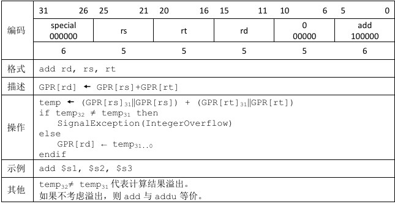
-
sub
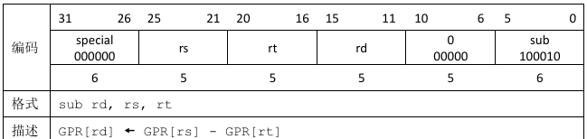
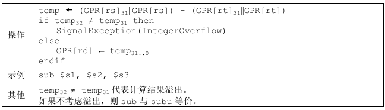
-
jr(注意 jr 是R型指令)
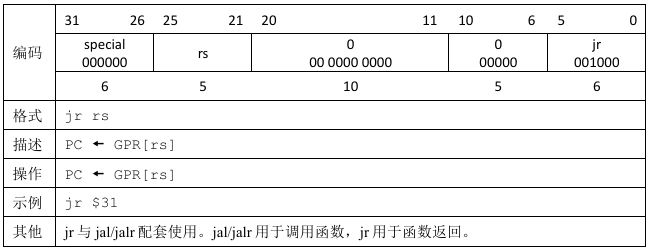
I型
-
ori
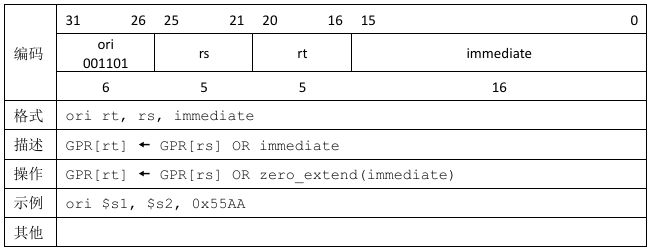
-
lw
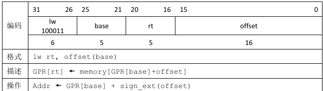
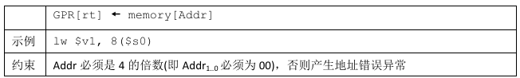
-
sw
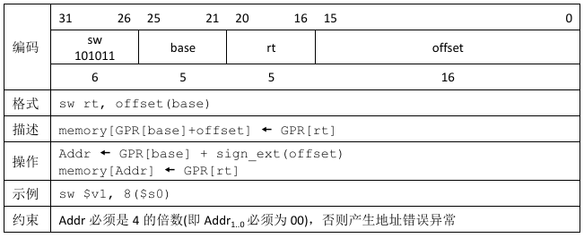
-
beq
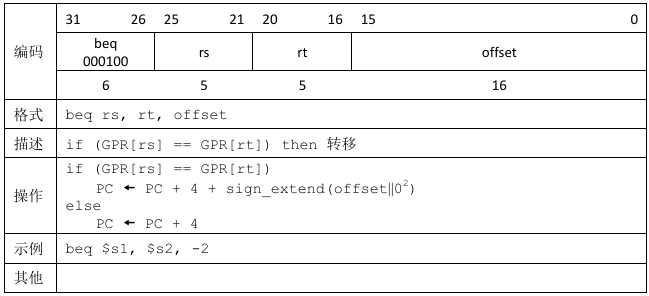
-
lui
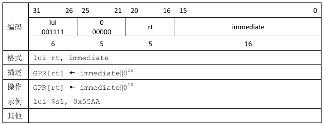
J型
- jal
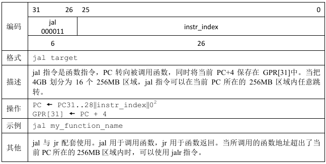
构建数据通路部件
带转发的总体架构图：(阻塞部分及转发的控制信号未在图中标出)

顶层架构命名规范
| 结构 | 命名方式 | 示例 | 名称 |
|---|---|---|---|
| 单独模块 | 级_名称 | ALU | E_ALU |
| 普通信号 | 级_信号 | E级的PC+8 | E_PC8 |
| 模块内部信号 | 模块名_信号名 | PC的en信号 | PC_en |
级间寄存器
D寄存器
| 名称 | 功能简述 | 位宽 | 方向 |
|---|---|---|---|
| clk | 时钟信号 | 1 | I |
| reset | 同步复位信号 | 1 | I |
| D_en | 写使能信号 | 1 | I |
| D_clear | 空泡清零信号 | 1 | I |
| F_PC | F级当前地址 | 32 | I |
| F_PC8 | F级当前地址加8 | 32 | I |
| F_instr | 指令 | 32 | I |
| D_PC | D级当前地址 | 32 | O |
| D_PC8 | D级当前地址加8 | 32 | O |
| D_instr | 指令 | 32 | O |
E寄存器
| 名称 | 功能简述 | 位宽 | 方向 |
|---|---|---|---|
| clk | 时钟信号 | 1 | I |
| reset | 同步复位信号 | 1 | I |
| E_en | 写使能信号 | 1 | I |
| E_clear | 空泡清零信号 | 1 | I |
| D_PC | F级当前地址 | 32 | I |
| D_PC8 | F级当前地址加8 | 32 | I |
| D_GRF_out1 | 寄存器输出1 | 32 | I |
| D_GRF_out2 | 寄存器输出2 | 32 | I |
| D_GRF_A3 | 寄存器写入地址 | 5 | I |
| D_EXT_imm | 扩展后立即数 | 32 | I |
| D_BSel | 判断ALUin2来源 | 1 | I |
| D_ALUOp | ALU计算类型 | 1 | I |
| D_NPCSel | 地址类型 | 1 | I |
| D_rs | D级要读取的寄存器 | 5 | I |
| D_rt | D级要读取的寄存器 | 5 | I |
| D_DMWr | DM写使能信号 | 1 | I |
| D_WDSel | 寄存器写入数据选择 | 2 | I |
| D_RFWr | 寄存器写使能信号 | 1 | I |
| D_t_new | 在D级产生需要的数据时间 | 4 | I |
| E_PC | F级当前地址 | 32 | O |
| E_PC8 | F级当前地址加8 | 32 | O |
| E_GRF_out1 | 寄存器输出1 | 32 | O |
| E_GRF_out2 | 寄存器输出2 | 32 | O |
| E_GRF_A3 | 寄存器写入地址 | 5 | O |
| E_EXT_imm | 扩展后立即数 | 32 | O |
| E_BSel | 判断ALUin2来源 | 1 | O |
| E_ALUOp | ALU计算类型 | 1 | O |
| E_NPCSel | 地址类型 | 1 | O |
| E_rs | E级要读取的寄存器 | 5 | O |
| E_rt | E级要读取的寄存器 | 5 | O |
| E_DMWr | DM写使能信号 | 1 | O |
| E_WDSel | 寄存器写入数据选择 | 2 | O |
| E_RFWr | 寄存器写使能信号 | 1 | O |
| E_t_new | 在D级产生需要的数据时间 | 4 | O |
M寄存器
| 名称 | 功能简述 | 位宽 | 方向 |
|---|---|---|---|
| clk | 时钟信号 | 1 | I |
| reset | 同步复位信号 | 1 | I |
| M_en | 写使能信号 | 1 | I |
| M_clear | 空泡清零信号 | 1 | I |
| E_PC | F级当前地址 | 32 | I |
| E_PC8 | F级当前地址加8 | 32 | I |
| E_ALUout | ALU计算结果 | 32 | I |
| E_GRF_out2 | 寄存器输出2 | 32 | I |
| E_GRF_A3 | 寄存器写入地址 | 5 | I |
| E_rs | E级要读取的寄存器 | 5 | I |
| E_rt | E级要读取的寄存器 | 5 | I |
| E_t_new | 在D级产生需要的数据时间 | 4 | I |
| E_DMWr | DM写使能信号 | 1 | I |
| E_WDSel | 寄存器写入数据选择 | 2 | I |
| E_RFWr | 寄存器写使能信号 | 1 | I |
| E_NPCSel | 地址类型 | 1 | I |
| M_PC | F级当前地址 | 32 | O |
| M_PC8 | F级当前地址加8 | 32 | O |
| M_ALUout | ALU计算结果 | 32 | O |
| M_GRF_out2 | 寄存器输出2 | 32 | O |
| M_GRF_A3 | 寄存器写入地址 | 5 | O |
| M_rs | M级要读取的寄存器 | 5 | O |
| M_rt | M级要读取的寄存器 | 5 | O |
| M_DMWr | DM写使能信号 | 1 | O |
| M_WDSel | 寄存器写入数据选择 | 2 | O |
| M_RFWr | 寄存器写使能信号 | 1 | O |
| M_NPCSel | 地址类型 | 1 | I |
| M_t_new | 在D级产生需要的数据时间 | 4 | O |
W寄存器
| 名称 | 功能简述 | 位宽 | 方向 |
|---|---|---|---|
| clk | 时钟信号 | 1 | I |
| reset | 同步复位信号 | 1 | I |
| W_en | 写使能信号 | 1 | I |
| W_clear | 空泡清零信号 | 1 | I |
| M_PC | F级当前地址 | 32 | I |
| M_PC8 | F级当前地址加8 | 32 | I |
| M_ALUout | ALU计算结果 | 32 | I |
| M_DMout | DM内存数据 | 32 | I |
| M_GRF_A3 | 寄存器写入地址 | 5 | I |
| M_NPCSel | 地址类型 | 1 | I |
| M_WDSel | 寄存器写入数据选择 | 2 | I |
| M_RFWr | 寄存器写使能信号 | 1 | I |
| M_t_new | 在D级产生需要的数据时间 | 4 | I |
| W_PC | F级当前地址 | 1 | O |
| W_PC8 | F级当前地址加8 | 1 | O |
| W_ALUout | ALU计算结果 | 32 | O |
| W_DMout | DM内存数据 | 32 | O |
| W_GRF_A3 | 寄存器写入地址 | 5 | O |
| W_WDSel | 寄存器写入数据选择 | 2 | O |
| W_RFWr | 寄存器写使能信号 | 1 | O |
| W_NPCSel | 地址类型 | 1 | O |
| W_t_new | 在D级产生需要的数据时间 | 4 | O |
F级
PC
功能 ：输出当前指令地址
端口说明
| 名称 | 功能简述 | 位宽 | 方向 |
|---|---|---|---|
| NPC | 输入NPC计算出的PC值 | 32 | I |
| clk | 时钟信号 | 1 | I |
| reset | 同步复位 | 1 | I |
| PC_en | PC写使能信号 | 1 | I |
| F_PC | F级当前指令地址 | 32 | O |
| F_PC8 | F级指令地址+8 | 32 | O |
NPC
功能 ：根据不同指令，输出下一周期跳转地址
端口说明
| 名称 | 功能简述 | 位宽 | 方向 |
|---|---|---|---|
| F_PC | F级当前地址 | 32 | I |
| imm26 | 26位立即数(j跳转) | 26 | I |
| imm16 | 16位立即数(用于beq跳转) | 16 | I |
| GRF_rs | rs寄存器中的值 | 32 | I |
| NPC_Sel | 控制信号 | 3 | I |
| zero | 控制信号 | 1 | I |
| NPC | 输出要跳转地址 | 32 | O |
IM
功能 ：根据地址取出对应指令
端口说明
| 名称 | 功能简述 | 位宽 | 方向 |
|---|---|---|---|
| F_PC | F级当前指令地址 | 32 | I |
| instr | 指令编码 | 32 | O |
D级
Splitter
功能 ：将32位指令拆分，方便后续判断指令类型
1 | module Splitter( |
GRF(Read)
功能 :寄存器堆，实现寄存器的读出
端口说明
| 名称 | 功能简述 | 位宽 | 方向 |
|---|---|---|---|
| clk | 时钟信号 | 1 | I |
| reset | 同步复位 | 1 | I |
| D_PC | 当前指令地址 | 32 | I |
| A1 | 读取第一个寄存器编号 | 5 | I |
| A2 | 读取第二个寄存器编号 | 5 | I |
| data_in | 写回的值 | 32 | I |
| out1 | 第一个寄存器值 | 32 | O |
| out2 | 第二个寄存器值 | 32 | O |
EXT
功能 : 实现不同类别的扩展
端口说明
| 名称 | 功能简述 | 位宽 | 方向 |
|---|---|---|---|
| imm16 | 待扩展立即数 | 16 | I |
| EXTOp | 扩展类别控制信号 | 1 | I |
| ext_imm | 扩展后32位立即数 | 32 | O |
CMP(新增)
功能 : 根据指令类型判断是否符合跳转条件
端口说明
| 名称 | 功能简述 | 位宽 | 方向 |
|---|---|---|---|
| inA | 待比较数1 | 32 | I |
| inB | 扩展类别控制信号 | 32 | I |
| type | 扩展类别控制信号 | 2 | I |
| zero | 是否符合跳转条件 | 1 | O |
E级
ALU
功能 : 核心，实现计算功能
端口说明
| 名称 | 功能简述 | 位宽 | 方向 |
|---|---|---|---|
| ALUOp | 计算类别控制信号 | 3 | I |
| in1 | 第一个计算数 | 32 | I |
| in2 | 第二个计算数 | 32 | I |
| ALUout | 计算结果 | 32 | O |
M级
DM
功能 : 存储数据
端口说明
| 名称 | 功能简述 | 位宽 | 方向 |
|---|---|---|---|
| clk | 时钟信号 | 1 | I |
| reset | 同步复位 | 1 | I |
| M_PC | 地址 | 32 | I |
| DMWr | 写使能控制信号 | 1 | I |
| Addr | 待操作内存地址 | 32 | I |
| in_data | 准备写入的数据 | 32 | I |
| DM_out | 当前地址指向内存的值 | 32 | O |
W级
GRF(Write)
功能 :寄存器堆，实现寄存器的写入
端口说明
| 名称 | 功能简述 | 位宽 | 方向 |
|---|---|---|---|
| clk | 时钟信号 | 1 | I |
| reset | 同步复位 | 1 | I |
| grf_we(RFWr) | 寄存器写使能信号 | 1 | I |
| D_PC | 当前指令地址 | 32 | I |
| A3 | 写入的寄存器编号 | 5 | I |
| data_in | 写回的值 | 32 | I |
译码方式
采取集中式译码，用单一Controller生成信号，然后用寄存器在级间传递。
| 名称 | 位置 | 功能简述 | 名称 | 位置 | 功能简述 |
|---|---|---|---|---|---|
| EXTOp | EXT | 立即数扩展类型 | DMWr | DM | 写使能信号 |
| BSel | ALU前 | 判断in2是rt还是立即数 | WDSel | GRF前 | 寄存器写入ALU计算结果还是内存数值 |
| ALUOp | ALU | 计算类型 | WRSel | GRF前 | 写入寄存器是rt还是rd |
| NPCSel | NPC | 指令类型 | RFWr | GRF | 寄存器写使能信号 |
| zero | NPC | beq比较是否相等 |
| 指令 | EXTOp | BSel | ALUOp | NPCSel | DMWr | WDSel | WRSel | RFWr |
|---|---|---|---|---|---|---|---|---|
| add | 0 | 0 | 00 | 00 | 0 | 0 | 1 | 1 |
| sub | 0 | 0 | 01 | 00 | 0 | 0 | 1 | 1 |
| ori | 0 | 1 | 10 | 00 | 0 | 0 | 0 | 1 |
| lw | 1 | 1 | 00 | 00 | 0 | 1 | 0 | 1 |
| sw | 1 | 1 | 00 | 00 | 1 | 0 | 0 | 0 |
| beq | 0 | 0 | 01 | 11 | 0 | 0 | 0 | 0 |
| lui | 0 | 1 | 11 | 00 | 0 | 0 | 0 | 0 |
| jr | 0 | 0 | 00 | 10 | 0 | 0 | 0 | 0 |
| jal | 0 | 0 | 00 | 01 | 0 | 0 | 0 | 1 |
Controller控制信号图 (来源于课上PPT)

阻塞与转发模块
转发部分
根据设计有 15条 转发通路（图中蓝色线部分）
其中W级到D级的转发在 GRF内部 实现，其余13条转发通路在HCU模块及顶层电路中实现。
| 来源 | 终点 | 名称 |
|---|---|---|
| M级ALUout | D级GRF_out1 | D_GRFou1_from_M_ALUout |
| D级GRF_out2 | D_GRFou2_from_M_ALUout | |
| E级ALUin1 | E_ALUin1_from_M_ALUout | |
| E级ALUin1 | E_ALUin2_from_M_ALUout | |
| W级GRF_D | D级GRF_out1 | D_GRFou1_from_W_GRFD |
| D级GRF_out2 | D_GRFou2_from_W_GRFD | |
| E级ALUin1 | E_ALUin1_from_W_GRFD | |
| E级ALUin2 | E_ALUin2_from_W_GRFD | |
| M级DMind | M_DMind_from_W_GRFD | |
| E级NPC8 | D级GRF_out1 | D_GRFou1_from_E_NPC8 |
| D级GRF_out2 | D_GRFou2_from_E_NPC8 | |
| M级NPC8 | D级GRF_out1 | D_GRFou1_from_M_NPC8 |
| D级GRF_out2 | D_GRFou2_from_M_NPC8 | |
| E级ALUin1 | E_ALUin1_from_M_NPC8 | |
| E级ALUin1 | E_ALUin2_from_M_NPC8 |
转发条件 :
- 读寄存器等于写寄存器编号且不为0
- 写寄存器使能有效
t_use和t_new都存在且t_use >= t_new
阻塞部分
寄存器写使能部分：E、M、W级寄存器 en=1,clear=0
只在D级阻塞，若需阻塞，则
PC_en = D_en = 0; E_clear = 1;
PC和D级寄存器保持不变，E级寄存器clear相当于插入空泡。
阻塞条件 :
- 读寄存器等于写寄存器编号且不为0
- 写寄存器使能有效
t_use和t_new都存在且t_use < t_new
组装数据通路
根据指令的RTL，选取需要的部件，建立正确的连接关系。
顶层建立mips.v文件
端口说明
| 名称 | 功能简述 | 位宽 | 方向 |
|---|---|---|---|
| clk | 时钟信号 | 1 | I |
| reset | 同步复位信号 | 1 | I |
1 | module mips( |
在顶层电路中，按照不同的模块分别声明变量类型，最后把不同的模块之间用导线连接。
测试方案
- 生成mars测试数据（尽可能覆盖全面），将指令导出为16进制格式，存在code.txt中；
- 运行mips文件，查看$display数据是否和mars中预期一致
- 与同学的代码结果进行对拍
- 借助学长评测机进行测试
思考题
- 我们使用提前分支判断的方法尽早产生结果来减少因不确定而带来的开销，但实际上这种方法并非总能提高效率，请从流水线冒险的角度思考其原因并给出一个指令序列的例子。
分支指令在D级就进行比较，需要的数据有很大可能还未产生，需要阻塞。而若阻塞次数过多会反而拖慢程序运行速率。
举例lw $t0, 0($0) beq $t0,$0,jump，则需要等待lw一周期才能获得$t0结果。
- 因为延迟槽的存在，对于 jal 等需要将指令地址写入寄存器的指令，要写回 PC + 8，请思考为什么这样设计？
延迟槽会紧跟分支指令执行，jal的功能是跳转并保存返回地址；由于此时PC+4为延迟槽指令，已经被执行过才进行跳转，所以下一次返回需要继续执行的指令是PC+8，若返回PC+4会重复执行延迟槽的指令。
- 我们要求大家所有转发数据都来源于流水寄存器而不能是功能部件（如 DM 、 ALU ），请思考为什么？
功能部件产生数据需要时间，若在功能部件后进行转发，可能会在一个周期的偏末位置才会产生需要转发的数据并进行转发，但是我们还需要转发后的数据继续运算，可能会拉长周期或者在短周期时出现问题。而流水线寄存器在时钟上升沿时就更新数据，在一个周期开始时可以马上进行正确的转发，在正确性和效率上都有保障。
- 我们为什么要使用 GPR 内部转发？该如何实现？
W级到D级间隔较远，需要转发来尽量避免阻塞。在读取寄存器编号和写入寄存器编号相同时，在GRF模块内部规定输出的数据为新写入的数据而非原始的寄存器值。
assign out1 = ((grf_we && (addr3!=5'd0)) && (addr1==addr3)) ? data_in : grf[addr1];
- 我们转发时数据的需求者和供给者可能来源于哪些位置？共有哪些转发数据通路？
转发数据的需求者分别是CMP比较的两个输入端口，ALU计算的两个输入端口，和DM存数据的输入端口；供给者可能是ALU计算的输出端口，DM的输出端口，以及PC+8；转发数据通路设计文档上面已经详细说明。
- 在课上测试时，我们需要你现场实现新的指令，对于这些新的指令，你可能需要在原有的数据通路上做哪些扩展或修改？提示：你可以对指令进行分类，思考每一类指令可能修改或扩展哪些位置。
分为计算指令，跳转指令，访存指令。修改ALU和Controller，还有转发和阻塞条件等。
- 确定你的译码方式，简要描述你的译码器架构，并思考该架构的优势以及不足。
我的译码方式为集中式译码，采用一个Controller用寄存器在流水线级间传递；采用控制信号驱动型译码。集中式译码的优势在于只需要一个Controller模块，更改时只需要做出一次更改然后随流水线传信号即可，不足在于寄存器传递信号过多，操作量大，每次修改后面的寄存器和顶层电路的连线均需做出修改。控制信号驱动译码优点在于每次新添加指令时修改少，不足在于直观性不强，debug不太方便。
如果您喜欢此博客或发现它对您有用，则欢迎对此发表评论。 也欢迎您共享此博客，以便更多人可以参与。 如果博客中使用的图像侵犯了您的版权，请与作者联系以将其删除。 谢谢 ！